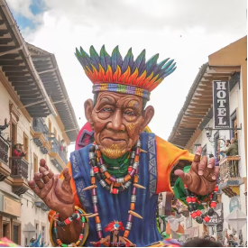

A Juan Diego le gusta la música porque le permite expresar sus emociones,
inspirarse y encontrar motivación en su día a día.
Los Deportes
A Juan Diego le gustan los deportes porque le permiten mantenerse activo,
superar retos y disfrutar del trabajo en equipo mientras fortalece su
disciplina y bienestar.
Pasatiempos
Paula Muñoz
La Lectura
A Paula le gusta leer porque encuentra en los libros una forma de aprender,
imaginar y descubrir nuevas perspectivas del mundo.

Los Carnavales
A Paula le gustan los Carnavales de Pasto porque disfruta de su colorido, la
alegría de la gente y la riqueza cultural que reflejan sus tradiciones.